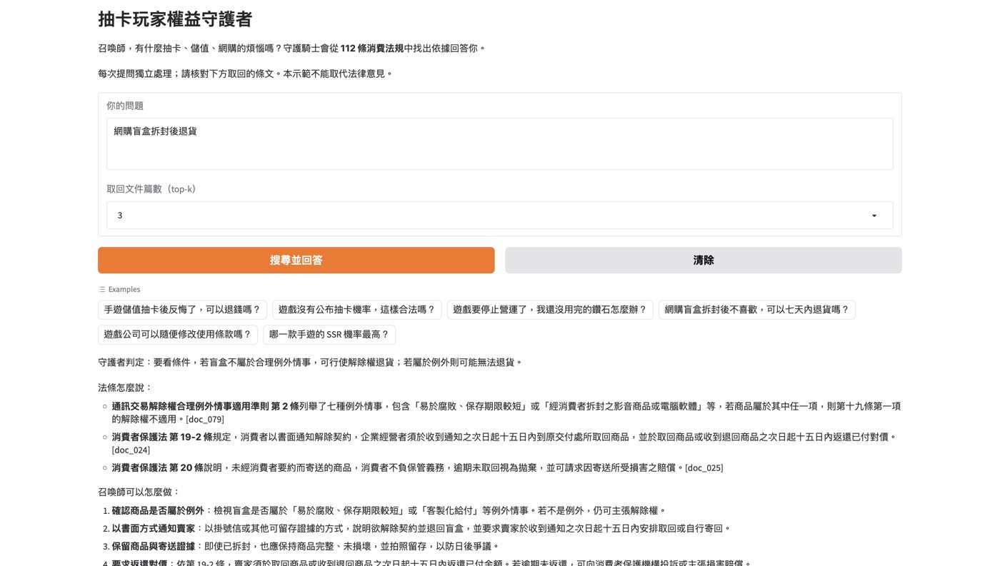

作業要做什麼
選一份有興趣的文件當知識來源：RAG01 向量化並建立向量資料庫（rag-data.zip），RAG02 讀入資料庫、搭配 LLM 回答，並用 Gradio 展示。
我做了什麼
- 選擇和抽卡玩家最相關的三份法規：消費者保護法、網路連線遊戲服務定型化契約應記載及不得記載事項、通訊交易解除權合理例外情事適用準則。
- 從全國法規資料庫下載 PDF，轉成 TXT。
- 老師範例是一篇一個向量；法規太長，所以寫了 split_law_text()，把法規切成一條一筆，共 112 筆。
- 用 EmbeddingGemma 2 向量化、FAISS 建立索引，存成 rag-data.zip 放在雲端，RAG02 用網址下載。
- 人設是「抽卡玩家權益守護騎士」：只根據條文回答，並標出條號。

結果與發現
- 問「抽卡機率沒公布」，檢索第一名就是遊戲契約第六點；問盲盒退貨，同時找到消保法第 19-2 條和適用準則第 2 條。
- 純 LLM 給了很多知識庫以外、沒有來源的平台退款規則；RAG 只根據條文回答並標出條號。
- 問法會影響檢索：問「抽卡後反悔」找得到七日解約，問「儲值後反悔」卻只找到契約終止那一點。
- AI 偶爾會把不同條文混在一起，或補上文件沒有的機關名稱，還是要對照原文。
心得
做 RAG 之後才知道，AI 回答得好不好，很大一部分取決於有沒有找到對的資料。同樣是問退費，換個說法就找不到七日解約那一條，回答也跟著變差。
純 LLM 和 RAG 的比較也很明顯：沒有資料的 AI 講得頭頭是道，但我沒辦法確認它說的對不對；有條文的 RAG 雖然講得比較少，每一句都能回頭核對。
AI 協助說明
本頁的整理由 Claude 依我的作業內容協助撰寫，我確認後採用。